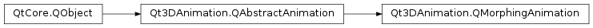

Qt3DAnimation.QMorphingAnimation¶
Synopsis¶
Functions¶
- def
addMorphTarget(target) - def
easing() - def
getWeights(positionIndex) - def
interpolator() - def
method() - def
morphTargetList() - def
removeMorphTarget(target) - def
setMorphTargets(targets) - def
setWeights(positionIndex, weights) - def
target() - def
targetName() - def
targetPositions()
Slots¶
- def
setEasing(easing) - def
setMethod(method) - def
setTarget(target) - def
setTargetName(name) - def
setTargetPositions(targetPositions)
Signals¶
- def
easingChanged(easing) - def
interpolatorChanged(interpolator) - def
methodChanged(method) - def
targetChanged(target) - def
targetNameChanged(name) - def
targetPositionsChanged(targetPositions)
Detailed Description¶
A class implementing blend-shape morphing animation
A
Qt3DAnimation.QMorphingAnimationclass implements blend-shape morphing animation to a targetQt3DRender.QGeometryRenderer. TheQMorphingAnimationsets the correctQAttributesfrom themorph targetsto the targetQGeometryRenderer.geometryand calculates interpolator for the current position. The actual blending between the attributes must be implemented in the material. Qt3DAnimation::QMorphPhongMaterial implements material with morphing support for phong lighting model. The blending happens between 2 attributes - ‘base’ and ‘target’. The names for the base and target attributes are taken from the morph target names, where the base attribute retains the name it already has and the target attribute name gets ‘Target’ appended to the name. The interpolator can be set as aQt3DRender.QParameterto the used material. All morph targets in the animation should contain the attributes with same names as those in the base geometry.
-
class
PySide2.Qt3DAnimation.Qt3DAnimation.QMorphingAnimation([parent=nullptr])¶ Parameters: parent – PySide2.QtCore.QObjectConstruct a new
QMorphingAnimationwithparent.
-
PySide2.Qt3DAnimation.Qt3DAnimation.QMorphingAnimation.Method¶ This enumeration specifies the morphing method.
Constant Description Qt3DAnimation.QMorphingAnimation.Normalized The blending should use the normalized formula; V’ = Vbase * (1.0 - sum(Wi)) + sum[Vi * Wi] Qt3DAnimation.QMorphingAnimation.Relative The blending should use the relative formula; V’ = Vbase + sum[Vi * Wi]
-
PySide2.Qt3DAnimation.Qt3DAnimation.QMorphingAnimation.addMorphTarget(target)¶ Parameters: target – PySide2.Qt3DAnimation.Qt3DAnimation::QMorphTargetAdd new morph
targetat the end of the animation.
-
PySide2.Qt3DAnimation.Qt3DAnimation.QMorphingAnimation.easing()¶ Return type: PySide2.QtCore.QEasingCurveSee also
PySide2.Qt3DAnimation.Qt3DAnimation::QMorphingAnimation.setEasing()
-
PySide2.Qt3DAnimation.Qt3DAnimation.QMorphingAnimation.easingChanged(easing)¶ Parameters: easing – PySide2.QtCore.QEasingCurve
-
PySide2.Qt3DAnimation.Qt3DAnimation.QMorphingAnimation.getWeights(positionIndex)¶ Parameters: positionIndex – PySide2.QtCore.intReturn type: Return morph weights at
positionIndex.
-
PySide2.Qt3DAnimation.Qt3DAnimation.QMorphingAnimation.interpolator()¶ Return type: PySide2.QtCore.float
-
PySide2.Qt3DAnimation.Qt3DAnimation.QMorphingAnimation.interpolatorChanged(interpolator)¶ Parameters: interpolator – PySide2.QtCore.float
-
PySide2.Qt3DAnimation.Qt3DAnimation.QMorphingAnimation.method()¶ Return type: PySide2.Qt3DAnimation.Qt3DAnimation::QMorphingAnimation.MethodSee also
PySide2.Qt3DAnimation.Qt3DAnimation::QMorphingAnimation.setMethod()
-
PySide2.Qt3DAnimation.Qt3DAnimation.QMorphingAnimation.methodChanged(method)¶ Parameters: method – PySide2.Qt3DAnimation.Qt3DAnimation::QMorphingAnimation.Method
-
PySide2.Qt3DAnimation.Qt3DAnimation.QMorphingAnimation.morphTargetList()¶ Return type: Return morph target list.
-
PySide2.Qt3DAnimation.Qt3DAnimation.QMorphingAnimation.removeMorphTarget(target)¶ Parameters: target – PySide2.Qt3DAnimation.Qt3DAnimation::QMorphTargetRemove morph
targetfrom the animation.
-
PySide2.Qt3DAnimation.Qt3DAnimation.QMorphingAnimation.setEasing(easing)¶ Parameters: easing – PySide2.QtCore.QEasingCurveSee also
PySide2.Qt3DAnimation.Qt3DAnimation::QMorphingAnimation.easing()
-
PySide2.Qt3DAnimation.Qt3DAnimation.QMorphingAnimation.setMethod(method)¶ Parameters: method – PySide2.Qt3DAnimation.Qt3DAnimation::QMorphingAnimation.MethodSee also
PySide2.Qt3DAnimation.Qt3DAnimation::QMorphingAnimation.method()
-
PySide2.Qt3DAnimation.Qt3DAnimation.QMorphingAnimation.setMorphTargets(targets)¶ Parameters: targets – Set morph
targetsto animation. Old targets are cleared.
-
PySide2.Qt3DAnimation.Qt3DAnimation.QMorphingAnimation.setTarget(target)¶ Parameters: target – PySide2.Qt3DRender.Qt3DRender::QGeometryRendererSee also
PySide2.Qt3DAnimation.Qt3DAnimation::QMorphingAnimation.target()
-
PySide2.Qt3DAnimation.Qt3DAnimation.QMorphingAnimation.setTargetName(name)¶ Parameters: name – unicode See also
PySide2.Qt3DAnimation.Qt3DAnimation::QMorphingAnimation.targetName()
-
PySide2.Qt3DAnimation.Qt3DAnimation.QMorphingAnimation.setTargetPositions(targetPositions)¶ Parameters: targetPositions – See also
PySide2.Qt3DAnimation.Qt3DAnimation::QMorphingAnimation.targetPositions()
-
PySide2.Qt3DAnimation.Qt3DAnimation.QMorphingAnimation.setWeights(positionIndex, weights)¶ Parameters: - positionIndex –
PySide2.QtCore.int - weights –
Sets morph
weightsatpositionIndex.- positionIndex –
-
PySide2.Qt3DAnimation.Qt3DAnimation.QMorphingAnimation.target()¶ Return type: PySide2.Qt3DRender.Qt3DRender::QGeometryRendererSee also
PySide2.Qt3DAnimation.Qt3DAnimation::QMorphingAnimation.setTarget()
-
PySide2.Qt3DAnimation.Qt3DAnimation.QMorphingAnimation.targetChanged(target)¶ Parameters: target – PySide2.Qt3DRender.Qt3DRender::QGeometryRenderer
-
PySide2.Qt3DAnimation.Qt3DAnimation.QMorphingAnimation.targetName()¶ Return type: unicode See also
PySide2.Qt3DAnimation.Qt3DAnimation::QMorphingAnimation.setTargetName()
-
PySide2.Qt3DAnimation.Qt3DAnimation.QMorphingAnimation.targetNameChanged(name)¶ Parameters: name – unicode
-
PySide2.Qt3DAnimation.Qt3DAnimation.QMorphingAnimation.targetPositions()¶ Return type: See also
PySide2.Qt3DAnimation.Qt3DAnimation::QMorphingAnimation.setTargetPositions()
-
PySide2.Qt3DAnimation.Qt3DAnimation.QMorphingAnimation.targetPositionsChanged(targetPositions)¶ Parameters: targetPositions –
© 2018 The Qt Company Ltd. Documentation contributions included herein are the copyrights of their respective owners. The documentation provided herein is licensed under the terms of the GNU Free Documentation License version 1.3 as published by the Free Software Foundation. Qt and respective logos are trademarks of The Qt Company Ltd. in Finland and/or other countries worldwide. All other trademarks are property of their respective owners.